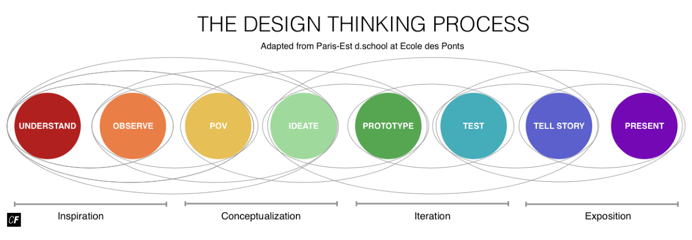

A dramaturg is a theatre artist who works with the playwright, director, designers, and actors in developing new or existing plays from the perspective of the audience. In new play development, the dramaturg collaborate with the
playwright in the creation of the storytelling mechanics and overall theatrical experience. In this case study, I will explain the striking similarities between Design Thinking method and my typical creative process as a dramaturg on a new
play.
THE CHALLENGE
Lead the creative team in the development process of a Russian dramatist Anton Chekhov's classic play Three Sisters (originally written in 1901) into an engaging theatrical experience for a contemporary audience in a black
box theatre.
THE TOOLS
Creative analysis Problem solving Public speaking Critical thinking Generative research Collaboration Empathy
THE GOAL
Develop a loose, experimental version of this classic play that focuses on poetic language, themes of addiction, and the emotional journey of the audience.
THE PROCESS
My dramaturgical practice reflects the progression of the Design Thinking method:

INSPIRATION
Conduct generative research on setting, themes, history, and previous productions to understand relevant context and read the play to observe the playwright's artistic strategy.
CONCEPTUALIZATION
Operating from the POV of the audience, guide the directors and designers in the pre-rehearsal process ideating and refining the overall concept for the production.
ITERATION
Collaboratively prototype and iterate possible solutions to staging and storytelling in rehearsals, then preview performances to test audience reactions, informing adjustments to be made before opening night.
EXPOSITION
To tell the story of the creative process the dramaturg writes a Program Note for the audience, contextualizing the final product, or presentation.
The next step was to discuss goals, challenges, and process with the playwright (Fly Steffens, they/them). It is imperative for the dramaturg to read the writer's other work to understand the playwright's style and vision for their
play. In our initial meeting, Fly and I discussed which translation of Three Sisters to use. This is a critical decision, especially for a project that is adapted from a language the playwright does not speak. For this project, we decided
to go the unconventional route and run the original Russian text through Google Translate. The translation was not gvery good, as you might expect, but it was an intriguing reference for Fly to write a completely new version in their own words.
Fidelity to the source text varies wildly and is an essential element in the concept of an adaptation of a classic play (I'm a total nerd for adaptation, especially Chekov and Shakespeare). We intended to do a transformative adaptation, or
a loose adaptation that resembles, but is ultimately very different from, the original. Most of the original characters and relationships remained, but the plot points, thematic ideas, and overall visual aesthetic would be transformed for a
contemporary audience, experimenting with storytelling elements.
The most radical alteration was the addition of a bear character. A bear is mentioned in the original play (and is also a common symbol for Russia), but Chekov's play was very realistic in style, so of course the bear is never
seen.
Fly and I were interested in the metaphorical power of a bear. In this adaptation, it served as a metaphor for Masha's struggle with alcoholism, which also isn't explicitly in the original, but the symptoms are common in Chekov's
characters.
Masha is the main character in this adaptation, and her bear would continue to be a unique but challenging device!
RESEARCH
Next, I moved onto the generative research phase, collecting sources that would support, illuminate, and strengthen the playwright's vision. After collecting images evocative of the story we were trying to tell, I read Chekov's other plays
and some of his short stories. I then explored analytical/critical writing on Chekov, specifically Three Sisters, and general topics relevant to the story (e.g. bears, what life was like in Russia in 1901, alcoholism, etc.). Lastly, I read
other adaptations of Three Sisters to evaluate how it's been adapted by other writers (much like a competitive analysis).
Finally, I compiled my research into a pre-production Dramaturgy Protocol, which would serve as a resource in the rehearsal room.
CONCEPTUALIZATION
DESIGN PROCESS
We then moved onto conversations with the director (John Muszynski) and Fly. In the initial production concept meeting, I presented my research to the director and discussed his concept and artistic vision for the production.
After our first meeting, the designers joined the conversation for a 12-week design process, consisting of biweekly design meetings where the lighting, scenic, costume, and sound designers presented their initial designs. In each meeting, I led a generative discussion focused
on further refining the concept and planning the logistics of building the show.
One particularly great challenge I faced in the design process was communicating the concept of the bear to the designers so they could integrate this metaphor in their designs.
I had plenty of articles and quotes that supported the artistic choice to add a bear to the adaptation, but I know that when communicating with designers, visuals are most effective.
Luckily, I had plenty of images to share to illustrate the imaged relationship between the main character Masha and the bear.
Throughout this phase, my contributions were centered on the audience's POV and achieving the shared goal to challenge the audience by experimenting with the existing story in a contemporary context. The conceptualization phase continued
through casting up until first rehearsal, when the actors joined the process.
ITERATION
REHEARSALS
Collaborative iteration in the rehearsal room generally occurs over a 3-4 week process. The director works with the actors on blocking (where to stand), emotional performance, and character motivation.
Actors are provided with an ACTOR PACKET a distilled version of the dramaturgy protocol, to support and inspire them in their work building their characters.
Meanwhile, the dramaturg notes challenging moments and tracks line changes in the SCRIPT CHANGE LOG as the playwright actively rewrites the script based on discoveries in the room. Rewrites can
include adding or cutting scenes and lines, and sometimes rewriting sections entirely.
A good example of a challenging moment was the long monologue at the end. As a dramaturg, I know that from an audience's POV it can be difficult to comprehend dense language by the end of a show. Attention spans are short, and after over an hour of
listening, the audience needs a little boost from non-verbal theatrical elements to aid in comprehension.
So, I suggested moving the forest fire in the scene before to the end. Since the play was not adhering to the original plot, a dramatically different ending was appropriate. It would also be a striking image and memorable event to end the
play on, leaving the audience with a visceral sense of destruction coupled with a sliver of hope for renewal.
AUDIENCE TESTING (PREVIEWS)
Technical rehearsals and previews were the final stage of the iteration phase, integrating all design elements into the play with the actors on the real set for the first time. After several days of tech rehearsals, audiences attend
preview performances. With this test audience, we can take observations of the audience reactions to pinpoint tweaks and changes to be made.
Additionally, I moderated a post-show discussion with the playwright and audience after the performance for direct feedback (just like user testing!). These structured conversations with the audience provide valuable insight into the
audience experience and almost always tease out issues that have gone unnoticed.
I was curious about what the audience thought of the bear, so I asked open-ended questions to gain insight, such as "What does the bear mean?" Answers differed, but in general, the audience confirmed they understood that the bear
symbolized an inner struggle. It was relieving and exciting to have proof that the risky artistic choice of the bear was successful!
EXPOSITION
TELL STORY & PRESENT
After previews... it's OPENING NIGHT!
At this point, the creative team's work ends, leaving the show in the hands of the actors and stage manager. However, this does not mean the dramaturg's work is over. Dramaturgs write a PROGRAM NOTE for the
audience providing background information and insight into the process. Additionally, dramaturgs hold periodic post-show discussions with the audience and actors for more feedback to strengthen the play in future iterations.
CONCLUSION
The run was short, but a great success! We sold out 3 of the 4 performances (a record for the Studio Series!), conducted engaging post-show discussions with audience, and received the Award for Best Ensemble in the Arizona Repertory
Theatre's season.